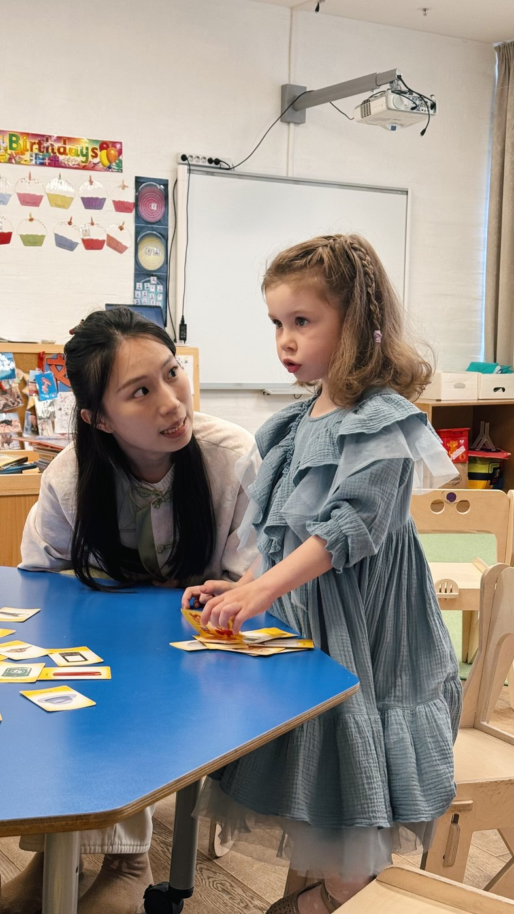
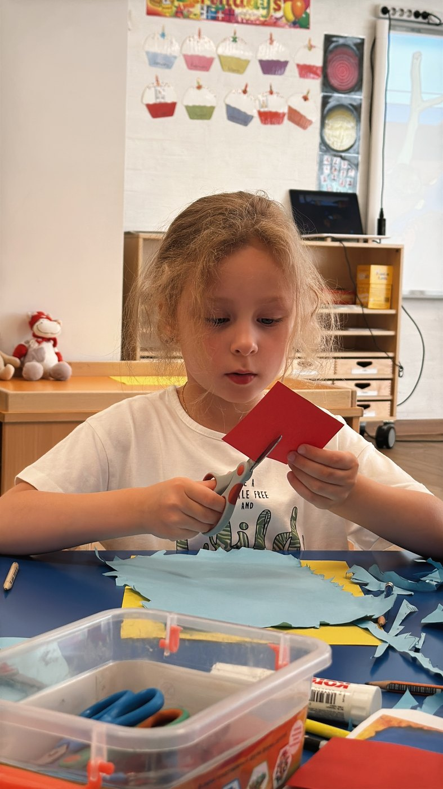
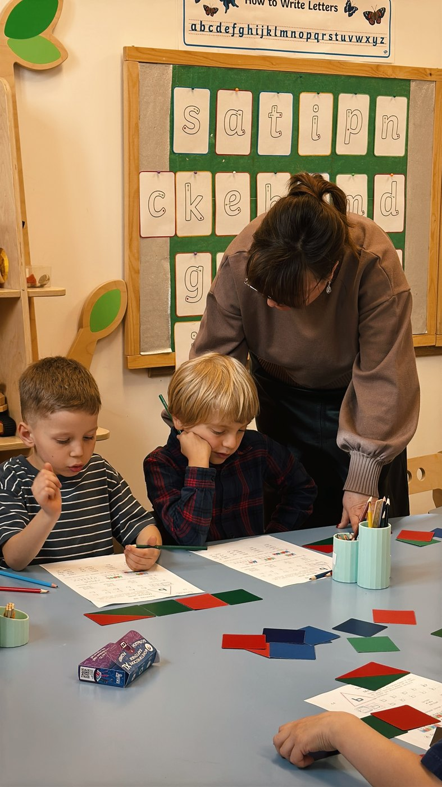
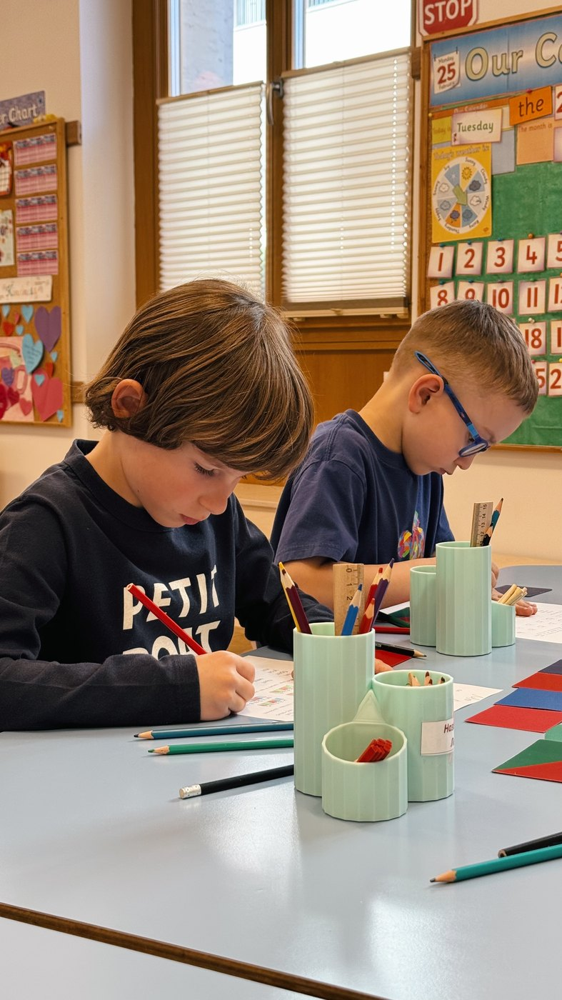

Ребёнок погружается в языковую среду через общение с носителями и билингвами. Язык осваивается естественно и в уютной атмосфере — через игру, вовлечение и исследование.
Лингвистический детский сад в Хамовниках
Частный детский сад с лингвистической образовательной программой
К первому классу ваш ребёнок будет свободно говорить, читать, писать и считать на английском и китайском. Наш уровень подготовки обеспечит готовность ребёнка к любому из дальнейших путей обучения. Будь то общеобразовательная, международная школа или Специализированное языковое образовательное учреждении.
О нас
Познакомьтесь с Park Kultury Nursery поближе
Живая языковая среда. Единственный детский сад с преподаванием на английском и китайском языках воспитателями — носителями языка. Заботливые педагоги, игра, исследование и творчество — короткое знакомство с атмосферой сада.
О нас
Сильный старт для будущего вашего ребёнка
Первые годы жизни определяют, как ребёнок будет думать, учиться, говорить и воспринимать мир. В этом возрасте закладываются вектор мышления, ориентир на самостоятельность и широта восприятия окружающего мира. Формируются языковой слух, естественное произношение и уверенность в речи.
Наша миссия
Мы не обучаем языку. Дети живут, растут и развиваются в Park Kultury Nursery на иностранном языке, формируя свои языковые и коммуникативные навыки, культуру, творчество и любознательность. С самого раннего возраста мы закладываем прочный фундамент на всю жизнь.
К окончанию программы ребёнок приобретает навыки во всех семи областях британской программы дошкольного образования Early Years Foundation Stage (EYFS), дополненной уровнями K1 и K2: общение и язык, физическое развитие, грамотность, математика, понимание мира, искусство и дизайн, личное, социальное и эмоциональное развитие.
В специально спроектированном пространстве площадью 700 м² в центре Москвы ребёнка окружают просторные классы, игровые зоны и англоязычные материалы. Обучение через игру и исследования развивает самостоятельность, самовыражение и креативное мышление — для уверенности в школе, путешествиях и международном общении.
Преимущества
Что получает ребенок и семья в Park Kultury Nursery Что получает ребенок и семья в Park Kultury Nursery
В саду дети общаются на иностранных языках весь день. Через игру они учатся исследовать мир, задавать вопросы, находить ответы и выходить за рамки собственного опыта.
В группах обучается до 10 детей. С каждым ребёнком работают преподаватель, ассистенты и няня, чтобы адаптация к садику проходила мягче и каждый ребёнок получал должное внимание.
В Park Kultury Nursery светлые классы, современные обучающие материалы, уютные спальни для дневного отдыха и закрытая охраняемая территория.
В Park Kultury Nursery дети растут рядом с ребятами из интернациональных и иноязычных семей, а родители оказываются в круге людей со схожим взглядом на образование, развитие и будущие возможности ребёнка.
Группы
Группы по возрасту и этапу развития

Nursery / Младшая группа
3–4 годаФокус на адаптации, самостоятельности, интересе к английской среде, первых навыках общения и творческой активности.
- мягкий старт в новой среде;
- ежедневная речь и ритуалы на английском;
- развитие бытовой самостоятельности;
- игра как основа обучения и коммуникации.

Reception / Средняя группа
4–5 летФормирование базовых навыков по 7 областям EYFS, расширение словаря, проектное мышление и первые самостоятельные учебные задачи.
- углубление языкового погружения;
- расширение словаря и уверенности в общении;
- математика, чтение, исследовательские проекты;
- социальные навыки и работа в группе.

Year 1
5–6 летПодготовка к школе, развитие чтения, письма, более уверенного самовыражения и академической самостоятельности.
- читательские и письменные навыки;
- осознанное использование языка в проектах;
- подготовка к следующему учебному этапу;
- укрепление внимания и самоорганизации.

Year 2
6–7 летУглублённая подготовка к следующему образовательному этапу, развитие уверенности, учебной зрелости и более сложной языковой практики.
- переход к следующему уровню образования;
- развитие уверенности и ответственности;
- более сложные задания и проекты;
- поддержка разных образовательных траекторий.
Наша команда
Наши преподаватели
В команде Park Kultury Nursery работают преподаватели английского и китайского языков, ассистенты и русскоязычные педагоги, которые помогают ребёнку мягко адаптироваться и ежедневно расти внутри сильной международной среды.
Среда и безопасность
Пространство сада
Park Kultury Nursery расположен в центре Хамовников, в охраняемом жилом комплексе. Пространство сада создано для дошкольного образования: светлые классы, игровая среда, собственная кухня и медицинское сопровождение.
Пространство, созданное для детей
Загляните в классы, игровые зоны и другие пространства Park Kultury Nursery.
Дополнительные программы
Программы после основной части дня
Китайская студия
Ежедневные трёхчасовые занятия с носителями китайского языка по эксклюзивной программе, специально адаптированной для дошкольников.
Русская студия
Игровой курс подготовки к школе с учётом возрастных особенностей.
Балет
Пластика, ритм, координация и уверенность в движении.
Музыка / фортепиано / вокал
Музыкальные занятия в индивидуальном и групповом форматах.
Капоэйра
Тренировки с чемпионом мира и основателем московской школы капоэйры Карлосом Альберто де Оливейра (Mestre Pepeu).
Верховая езда
Занятия с опытными инструкторами и нашими пони в конюшне близлежащего детского парка. Верховая езда развивает координацию, концентрацию, самостоятельность и бережное отношение к животным.
Арт-занятия
Живопись, графика и творческие проекты, которые развивают воображение, чувство цвета и уверенность в самовыражении.
Плавание
Занятия в воде для развития координации, выносливости и уверенности.
Baby College 0–3
Мягкий вход в среду сада для самых маленьких детей и их родителей.
Отзывы родителей
Что отмечают семьи, которые уже выбрали Park Kultury Nursery
Стоимость
Форматы посещения и стоимость
180 000 ₽ / месяц
08:30–15:30
- образовательная программа на английском языке;
- книги и учебные материалы;
- материалы для творчества;
- сбалансированное 4-разовое питание;
- медицинское сопровождение.
240 000 ₽ / месяц
08:30–18:30
- всё из программы короткого дня;
- сбалансированное 5-разовое питание;
- дополнительные занятия после 15:30 на китайском, английском или русском.
Хотите узнать больше?
Посмотрите видео с нашего недавнего концерта
Полная запись праздника Park Kultury Nursery — выступления детей, музыка и атмосфера нашего сообщества.
Индивидуальная экскурсия
Готовы к знакомству? Запишитесь на экскурсию!
Во время экскурсии покажем классы и образовательную среду, расскажем о программе EYFS, формате дня и поможем понять, какая группа подойдёт вашему ребёнку.
+7 (495) 646-86-80
+7 (915) 480-00-20
admin@parkkulturynursery.com
Москва, ул. Льва Толстого, 23/1, ЖК «Литератор»